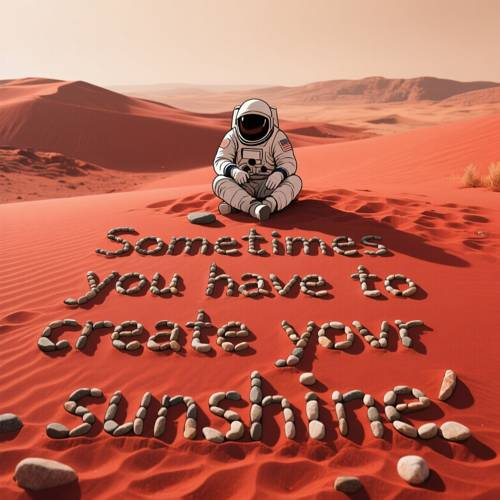
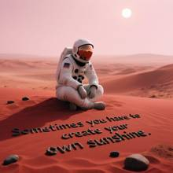

Text Generation — Please draw: A lonely astronaut sits on a red sand dune on Mars, spell
Please draw: A lonely astronaut sits on a red sand dune on Mars, spelling out the words "Sometimes you have to create your own sunshine" with stones on the sand in front of him

Direct — one call, no iterationContinuum — Qwen3.8-27B + Qwen-Image
Judge — Direct
FAILText Generation — The image displays text written on the sand with stones. The text reads 'Sometimes you have to create your sunshine'. The prompt required the text to be 'Sometimes you have to create your own sunshine'. The word 'own' is missing from the image.
Judge — Continuum
PASSText Generation — The image contains the text "Sometimes you have to create your own sunshine" spelled out on the sand with dark stones. The text is legible, correctly spelled, and matches the prompt's requirement exactly, with no omissions or extra words.
What the agent did
Thinking
Let me generate this image. Prompt: a lonely astronaut sitting on a red sand dune on Mars, using stones on the sand in front of him to spell out the words "Sometimes you have to create your own sunshine." Key elements: 1. A lonely astronaut sitting on a red sand dune 2. Mars setting (red/orange terrain, probably a dusty pinkish sky) 3. Stones on the sand in front of him spelling out the sentence 4. The text must be rendered accurately — I need to inspect the text at zoom to confirm. Let's generate with qwen-image, landscape orientation, 1024x1024 is the default, but the scene might be better in landscape. The benchmark policy says the image size is fixed for comparison — I'll use the default (1024x1024). Actually, I can set the size. The policy says "image size is fixed for comparison" — meaning I shouldn't expand the canvas. But the initial generation size is up to me. The default 1024x1024 is probably safest for the harness. Hmm, but landscape would be better for the text. The harness probably compares the generated image. To be safe, let me stick with the default 1024x1024. No wait, let me think: the instructions say "don't try to expand the frame. Since the image size is fixed for comparison, expanding the canvas makes the result unscorable." This refers to the canvas after the initial generation. The initial size is probably set by the harness's default. I'll use the default. Prompt for generation: "A lonely astronaut in a white spacesuit sits on a red sand dune on Mars, a vast rusty desert landscape, dusty pale pink sky with a small sun. In the sand in front of him, he has arranged small dark stones to spell the words 'Sometimes you have to create your own sunshine' in a neat line. Cinematic, melancholic, detailed." Then I'll inspect the text region with inspect_region and edit as needed. Let me start the generation.
Step 1 — `generate_image`
{
"model": "qwen-image",
"prompt": "A lonely astronaut in a white spacesuit sits alone on a red sand dune on Mars, leaning forward with elbows on knees, helmet reflecting the sky. Vast rusty ochre desert dunes stretch to the horizon under a hazy pale pink Martian sky with a small distant sun. In the reddish sand directly in front of him, he has arranged small dark pebbles and stones carefully to spell the words \"Sometimes you have to create your own sunshine\" in one readable line. Melancholic cinematic atmosphere, warm dusty light, highly detailed, photorealistic."
}
Result img_0

Thinking
The image came out well. Let me zoom in on the text to check. The text reads "Sometimes you have to create your own sunshine." Let me verify each word by inspecting the region.
Model
The first generation looks very promising. Let me zoom in on the text to verify the spelling.
The crop is showing "Sometimes you have to create your" and part of "own sunshine". The text so far seems correct. Let me check the lower line "own sunshine" — in the full image it looks like "own sunshine." Let me inspect the lower text region.
In the crop, the top 2 lines are clearly displayed: "Sometimes you have to / create your" and the beginning of "own sunshine". Let's take a look at the last line, "own sunshine." — I'll check it precisely.
The text reads as follows: - Line 1: "Sometimes you have to" - Line 2: "create your" - Line 3: "own sunshine." Complete text: "Sometimes you have to create your own sunshine." This matches the requested sentence. There's a period at the end, but that's fine. All the elements are in place: - A lone astronaut sitting on red sand dunes ✓ - Mars environment (red dunes, pale pink sky, small sun) ✓ - Using stones on the sand in front of him to spell out the sentence ✓ - The text is spelled correctly ✓ The composition is beautiful. I'll mark this as the best. The text is accurate, so no edits are needed. I'll mark img_0 as the best and be done.
Model
All the lines are spelled correctly: "Sometimes you have to / create your / own sunshine." — it's an exact match with the requested sentence. The scene contains everything that was asked for: a lonely astronaut sitting on a red Martian dune, a hazy pink sky, and a stone inscription on the sand in front of him. No editing is needed.
Step 5 — `mark_best`
{
"image": "img_0",
"reason": "All prompt elements present and verified: lonely astronaut seated on a red Martian dune, dusty pink sky, and stones on the sand spelling the exact sentence \"Sometimes you have to create your own sunshine\" \u2014 spelling verified letter by letter via zoomed crops."
}
Thinking
Complete. The marked image is img_0, which is also the latest one. Since all the elements have been verified, I can stop here.
Model
The image is complete and marked. It shows a lonely astronaut in a white spacesuit sitting on a red Martian sand dune under a hazy pink sky, with small dark stones arranged on the sand in front of him spelling the full sentence — "Sometimes you have to create your own sunshine" — which I verified letter by letter with zoomed crops. No further edits were needed.